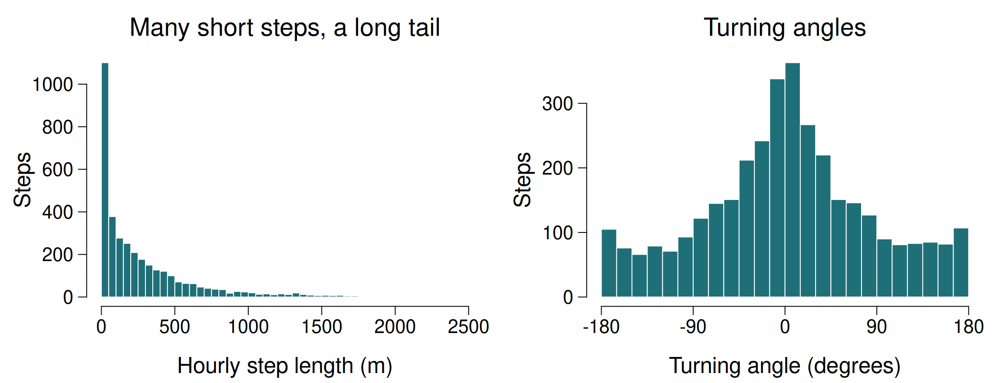
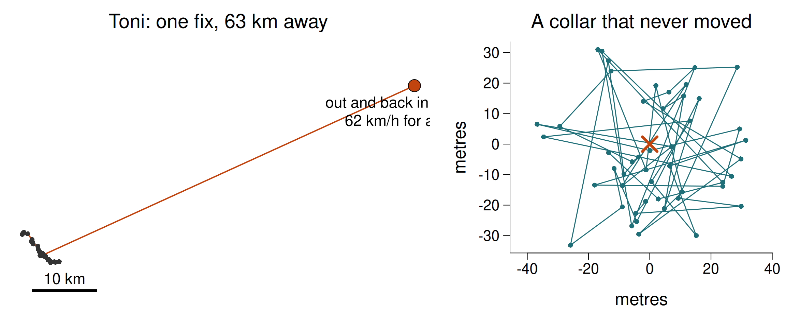
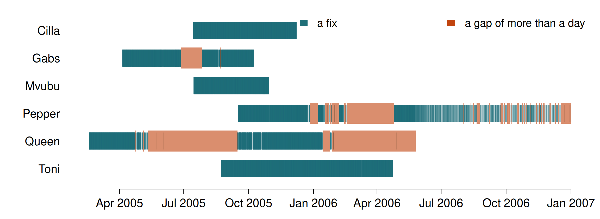
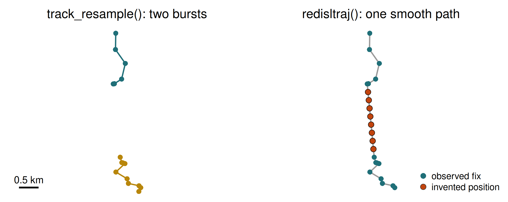
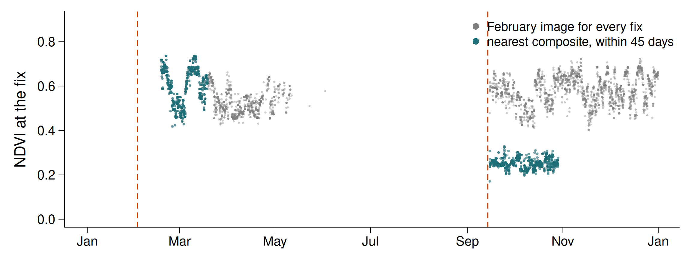

From fixes to trajectories
Session 3 — Data cleaning, bursts, resampling
Today
Internal state Motion capacity Navigation capacity External factors Movement path
We turn a table of fixes into a path we can defend, and attach the environment to it — in space and in time.
Where we are going
- Position data are not path data: what a step and a turning angle really are
- Location error, and why you cannot just connect the dots
- Cleaning: duplicates, impossible locations, speed outliers
- Bursts, gaps and truncation; resampling to a regular grid
- Which analyses tolerate irregular sampling, and which do not
- Annotating a trajectory with environment matched in time
80% of a movement analysis is getting the data into a defensible state. Today is that 80%.
1 · Positions are not paths
What a GPS track actually is
- A set of point estimates, each with an error, at irregular moments
- Between two fixes the animal went somewhere; the straight line is an assumption, not an observation
- Interpolating a position between fixes invents data — useful for plotting, dangerous for inference
- Every derived quantity — step length, speed, turning angle — inherits both the sampling interval and the location error
A track is a sample of a continuous path. Treat every line you draw between fixes as a hypothesis.
The step
Two consecutive fixes define a step.
- Step length \(s_t = \lVert \mathbf{x}_{t+1} - \mathbf{x}_t \rVert\)
- Absolute direction \(\phi_t = \operatorname{atan2}(\Delta y, \Delta x)\)
- Turning angle \(\theta_t = \phi_t - \phi_{t-1}\), wrapped to \((-\pi, \pi]\)
- Speed \(v_t = s_t / \Delta t\)
A turning angle needs three fixes. A step needs two. That is why filter_min_n_burst(min_n = 3) exists.
. . .
Turning angles are circular data: −179° and +179° are 2° apart, not 358°. Never take an arithmetic mean of angles.
Steps and turns of a real buffalo
Figure produced with own R code · data: Kruger buffalo, Getz et al. (Movebank)
Cilla, hourly steps. Short steps dominate; turning angles concentrate near 0° (keep going). The bars at −180° and +180° are the same reversal, split in two by the axis.
Location error: why you cannot connect the dots
- A 15 m error on each fix is negligible on a 1 km step, and dominates a 20 m step
- For short steps the direction is mostly noise, so turning angles look random exactly when the animal is resting
- A single bad fix creates a spike: an impossible step out and back
- Error is not independent white noise: it is correlated in time and worse in closed habitat
Resting animals look like they are wandering at random, and spikes look like sprints. Neither is behaviour. Both reach your models unless you look first.
What error looks like

Figure produced with own R code · data: Kruger buffalo, Getz et al. (Movebank); right panel simulated
Left: real data, 24 hours either side of a corrupt fix. Right: simulated — 48 hourly fixes of a motionless collar with 15 m error. It “walks” 1 km a day and turns at random.
2 · Getting data
Movebank in R
library(move2)
# Interactive login, stored in your keyring
movebank_store_credentials("your_username")
# What is available?
movebank_download_study_info(license_type = "CC_0")
# Download a study
buff <- movebank_download_study(
study_id = 1764627,
sensor_type_id = "gps"
)Today we read the CSVs from data/ instead — no accounts, no network, and everyone gets identical results. But this is how you get your own data.
Two object models
move2
An sf data frame with a track id and a time column, plus metadata.
Closest to Movebank’s own structure. Good for data management: multiple studies, deployments, sensors.
amt
A tibble with columns x_, y_, t_ and a CRS.
Deliberately minimal. Built for analysis: resampling, steps, home ranges, RSF, SSF.
make_track(), track_resample(), steps()
They convert into each other. Use move2 to organise, amt to analyse. This course lives mostly in amt.
Making a track
```{r}
#| eval: false
library(amt)
library(dplyr)
buffalo <- read.csv("data/buffalo_kruger.csv.gz") |>
transmute(id = individual.local.identifier,
t = as.POSIXct(timestamp, tz = "UTC"),
x = location.long,
y = location.lat) |>
filter(!is.na(x), !is.na(y)) |>
distinct(id, t, .keep_all = TRUE)
trk <- make_track(buffalo, x, y, t, id = id, crs = 4326) |>
transform_coords(crs_to = 32736)
```The trailing underscores (x_, y_, t_) are amt’s way of guaranteeing its own columns never collide with yours.
3 · Cleaning
The four things that are always wrong
- Duplicated fixes — same individual, same timestamp. The collar re-transmitted. ~13% of our buffalo file.
- Missing coordinates — a row exists, the location failed.
- Impossible locations — (0, 0), land animals at sea, points on another continent. Usually a corrupt transmission.
- Speed outliers — a fix that implies 200 km/h for a buffalo, then a return. A spike.
Clean in this order, and count what you remove at each step. A cleaning step that silently deletes 30% of your data has changed your study.
Duplicates are not all the same
- Exact duplicates — every field identical. Safe to drop.
- Same timestamp, different coordinates — which is right? Keep the one with better quality (more satellites, lower DOP); if you cannot tell, keep the first and document it.
-
Near-duplicates — timestamps a few seconds apart. These create near-zero
dtand therefore enormous apparent speeds.
# Blunt but explicit
trk |> distinct(id, t_, .keep_all = TRUE)
# move2 is more careful about the ambiguous case
move2::mt_filter_unique(x, criterion = "first")Speed filtering: useful and dangerous
- Compute speed between consecutive fixes; drop anything above a biologically plausible maximum
- Buffalo ~ 10 km/h sustained; vulture ~ 80 km/h in flight
- The danger: a threshold that is too low deletes real fast movement — exactly the migration or escape events you may care about
- The subtlety: one bad fix creates two fast steps (out and back). Naïve filters often delete the good neighbour instead of the bad point
Never filter silently. Plot what you are about to remove, look at it, then remove it. The sdafilter/argosfilter approach — which tests whether a point is fast and forms a spike — is better than a plain speed threshold.
Quiz
You remove all fixes implying a speed above 15 km/h from the buffalo data, and your dataset shrinks by 0.4%. Then you compute mean daily displacement and it drops by 18%. What is the most likely explanation?
Speed is distance divided by time. A pair of fixes 40 seconds apart — a near-duplicate — gives a huge apparent speed even if the animal moved 200 m. Filtering on speed therefore preferentially removes fixes with small time gaps, not fixes with large distances.
An 18% change in a summary statistic from deleting 0.4% of rows is a red flag that the filter is doing something other than what you intended.
Correct order: remove duplicates and near-duplicates first, resample to a regular interval second, and only then consider a speed filter — on steps that share a common dt.
4 · Bursts, gaps and regularity
Why it governs everything
- Step length and turning angle are only comparable across steps of the same duration
- HMMs (Session 8) assume a regular interval; irregular data need a continuous-time model instead
- SSFs (Session 7) compare each observed step to alternatives of the same duration
- KDE home ranges assume roughly even coverage in time
trk |> summarize_sampling_rate_many(cols = "id", time_unit = "hour")What our buffalo actually look like
| id | min | q1 | median | mean | q3 | max | n |
|---|---|---|---|---|---|---|---|
| Queen | 0.03 | 1 | 1 | 2.45 | 1 | 2523 | 4544 |
| Gabs | 0.03 | 1 | 1 | 1.22 | 1 | 723 | 3669 |
| Cilla | 0.05 | 1 | 1 | 1.00 | 1 | 2 | 3527 |
- Median 1 hour — that is the programmed schedule
- Minimum 0.03 h = 2 minutes — near-duplicates
- Maximum 2523 hours = 105 days for Queen — the collar stopped and restarted
- Mean ≫ median: the distribution is dominated by a few enormous gaps
Report the median, not the mean, for sampling intervals. And always look at the maximum.
Gaps at a glance

Figure produced with own R code · data: Kruger buffalo, Getz et al. (Movebank)
One tick per fix. Queen’s collar went silent for 105 days in mid-2005; Pepper’s schedule frays into gaps through late 2006.
Two ways to hold a trajectory
adehabitatLT::ltraj
The classic (Calenge 2006). One data frame per burst, with dist, dt, R2n (squared displacement), abs.angle and rel.angle precomputed.
redisltraj() regularises by interpolating new positions.
amt::track_xyt
A tidy tibble. Steps, angles and covariates are computed when you ask.
track_resample() regularises by selecting existing fixes.
The two “regularise” functions do opposite things. One keeps only what you observed; the other manufactures positions you did not observe.
Selecting versus interpolating

Figure produced with own R code · data: Kruger buffalo, Getz et al. (Movebank)
Toni across a 9-hour gap. Selection ends the burst at the gap; interpolation fills it with evenly spaced positions on a straight line the buffalo almost certainly did not walk.
Truncation: the start and the end
- After capture — animals often behave abnormally for days (flight, restricted movement). Many studies discard a fixed post-capture window
- Before the end — a collar that stops moving may mean a dead animal or a dropped collar, not a resting one
- At gaps — a burst ends wherever fixes are missing; steps are never computed across a gap
Decide the truncation rules before you look at the results, write them down, and report how much data they removed.
Resampling and bursts
track_resample() keeps fixes that fall on a regular grid within a tolerance, and labels contiguous runs as bursts.
trk |>
track_resample(rate = hours(1), tolerance = minutes(10)) |>
filter_min_n_burst(min_n = 3)-
rate— the interval you want -
tolerance— how much slack. Too tight and you throw away good data; too loose and “hourly” steps are really 40–80 minutes - A burst breaks wherever a fix is missing. Steps are computed within bursts, never across a gap
-
min_n = 3because a turning angle needs three points
The trap: track_resample() ignores group_by()
# WRONG — one time grid laid across six interleaved animals
trk |> group_by(id) |> track_resample(rate = hours(1))| id | fixes before | grouped (wrong) | per animal (right) |
|---|---|---|---|
| Cilla | 3528 | 2731 | 3518 |
| Mvubu | 2572 | 166 | 2544 |
| Queen | 4545 | 1741 | 4354 |
. . .
# RIGHT — each animal gets its own grid
resample_one <- function(d) {
track_resample(d, rate = hours(1), tolerance = minutes(10))
}
trk |>
nest(data = -id) |>
mutate(data = lapply(data, resample_one)) |>
unnest(cols = data)No error, no warning — just 58% of your data gone. Not every function respects dplyr grouping. When a step removes far more than you expected, check the per-group counts before you accept it.
Who tolerates irregular sampling?
| Method | Irregular sampling? | Why |
|---|---|---|
| MCP, classical KDE | tolerated, with care | uneven sampling over-weights well-sampled periods |
| Brownian bridge (Session 6) | yes | the bridge’s variance grows with the time between fixes |
AKDE / ctmm (Session 6) |
yes | continuous-time models |
| SSF (Session 7) | per burst | every step must span the same interval |
| HMM (Session 8) | no, not directly | discrete time steps; impute a regular grid first (momentuHMM::crawlWrap) |
Regularity is not a cosmetic property of your data. It decides which methods you are allowed to use.
Quiz
track_resample() interpolates missing locations to give you a regular series. True or false?
amt::track_resample() is a filter, not an interpolator. It walks the track and keeps the fixes that fall close enough to a regular time grid; where no fix is available, the burst simply ends. You never gain observations you did not make.
That is deliberate. Interpolating locations invents data and then feeds the invention into a model as if it were an observation, which biases step-length and turning-angle distributions towards straighter, slower movement.
If you genuinely need locations between fixes, use a model that says so — a continuous-time movement model (ctmm) or a state-space model — which gives you interpolated positions with uncertainty attached.
Quiz
A colleague reports a mean sampling interval of 2.45 hours for a collar programmed to fix hourly. What does that number actually tell you?
The median for this collar is 1 hour — the schedule is intact. The mean is 2.45 h because the distribution has a long tail: one gap of 2,523 hours (105 days) drags it up on its own.
A mean sampling interval is a summary of your collar failures, not of your sampling design. Report the median, the maximum gap, and the number of gaps beyond some threshold.
And no, you cannot read the fix success rate off the mean. Success rate is the proportion of scheduled attempts that returned a location, which you get by dividing each gap by the modal interval and counting the misses.
5 · Attaching the environment
The operation
For every fix, look up the environment there and then.
-
Static covariates — elevation, slope, distance to river. One raster;
extract()and done. - Dynamic covariates — NDVI, temperature, snow. A stack of rasters with timestamps. You must match each fix to the right layer.
A track that spans two years annotated with a single NDVI image is not annotated — it is decorated. If your covariate varies in time and your analysis does not, you have thrown away the mechanism.
Decorated versus annotated

Figure produced with own R code · data: Kruger buffalo, Getz et al. (Movebank); MODIS MOD13Q1 NDVI
Queen in 2005. One February image says she lived in green vegetation all year. Matched in time, NDVI halves by September — and the months with no composite nearby are honestly blank.
Doing it in time
# Which layer does each fix belong to?
layer_dates <- as.Date(c("2005-01-01", "2005-01-17", ...))
idx <- findInterval(as.Date(trk$t_), layer_dates)
# Extract from the whole stack, then pick the right column per row
vals <- terra::extract(ndvi_stack, vect(trk))[, -1]
trk$ndvi <- vals[cbind(seq_len(nrow(vals)), idx)]Movebank Env-DATA does this for you, including interpolation in time, for dozens of products. Use it for real projects — but understand what it is doing first, which is what today’s exercise is for.
Quiz
You annotate two years of buffalo fixes with a single dry-season NDVI image and find a strong positive selection for high NDVI. What is the main problem?
The image describes one moment. Over two years, vegetation in a savanna swings enormously between wet and dry season, and the buffalo’s needs swing with it. By holding NDVI fixed you have conflated “places that were green in that dry season” with “places that are green when the animal was there”.
What you have measured is selection for persistently productive places — which may be interesting, but is not what the model claims.
The result can even be the opposite sign from the time-matched analysis: an animal may select the greenest available patch at every moment while showing no preference for places that are green on average.
Fix: use a time series and match each fix to the contemporaneous layer.
Today’s practical
- Build the same trajectory in
adehabitatLTand inamt - Clean it, counting what you remove
- Quantify and visualise sampling irregularity
- Resample: selection (
track_resample) versus interpolation (redisltraj) - Day or night?
time_of_day() - Attach NDVI matched to the season of each fix
Recap
- A track is a sample of a path; every line between fixes is an assumption
- Location error dominates short steps: resting looks random, spikes look like sprints
- Clean in order: duplicates → missing → impossible → speed, counting as you go
-
track_resample()selects;redisltraj()interpolates;track_resample()ignoresgroup_by() - Regularity decides which methods you may use later
- Annotate in space and time
Before Session 4
-
vignette("adehabitatLT", package = "adehabitatLT"), sections onltraj - Skim Fauchald & Tveraa (2003), Ecology 84:282 — first-passage time